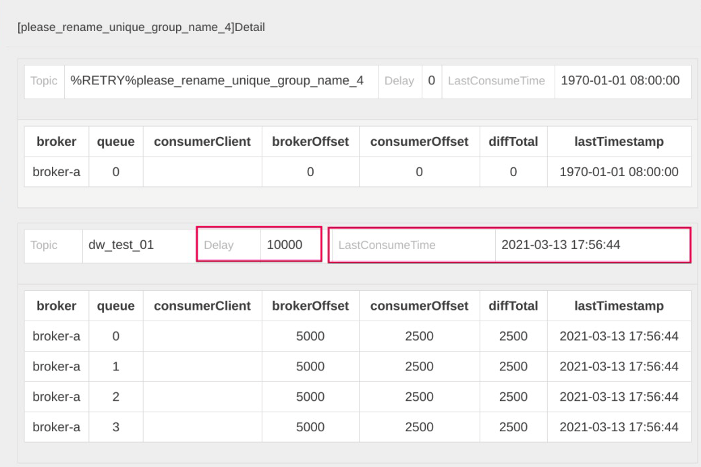
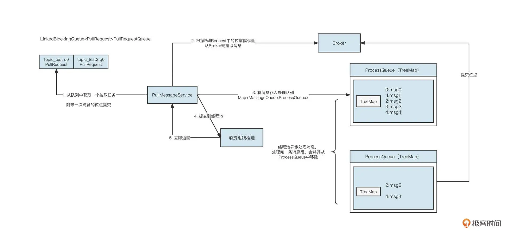
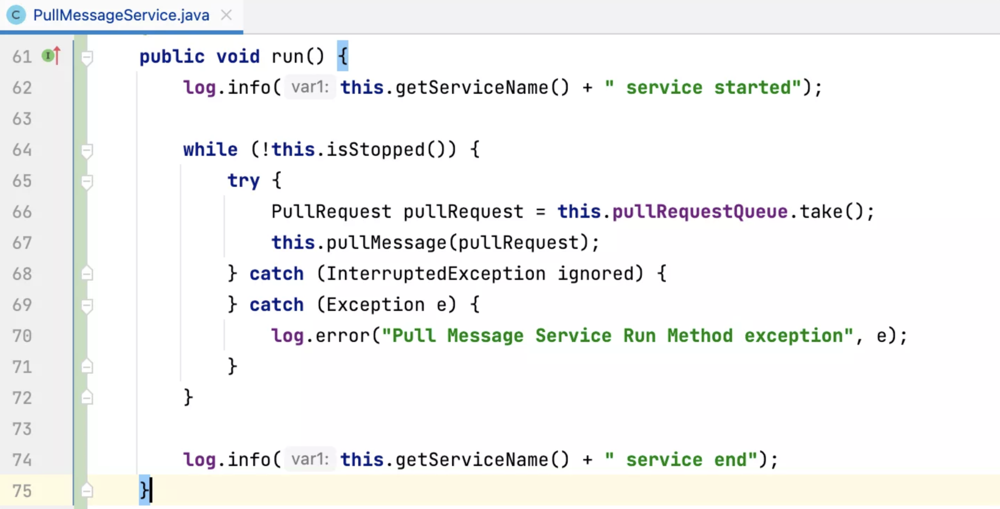
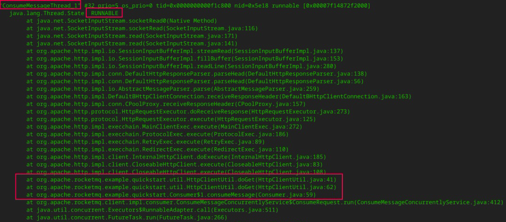

- 00 开篇词 为什么中间件对分布式架构体系来说这么重要？.md
- 01 中间件生态（上）：有哪些类型的中间件？.md
- 02 中间件生态（下）：同类型的中间件如何进行选型？.md
- 03 数组与链表：存储设计的基石有哪些？.md
- 04 红黑树：图解红黑树的构造过程与应用场景.md
- 05 多线程：多线程编程有哪些常见的设计模式？.md
- 06 锁：如何理解锁的同步阻塞队列与条件队列？.md
- 07 NIO：手撸一个简易的主从多Reactor线程模型.md
- 08 Netty：如何优雅地处理网络读写，制定网络通信协议？.md
- 08 加餐 中间件底层的通用设计理念.md
- 09 技术选型：如何选择微服务框架和注册中心？.md
- 10 设计原理：Dubbo核心设计原理剖析.md
- 11 案例：如何基于Dubbo进行网关设计？.md
- 12 案例：如何实现蓝绿发布？.md
- 13 技术选型：如何根据应用场景选择合适的消息中间件？.md
- 14 性能之道：RocketMQ与Kafka高性能设计对比.md
- 15 案例：消息中间件如何实现蓝绿？.md
- 16 案例：如何提升RocketMQ顺序消费性能？.md
- 17 运维：如何运维日均亿级的消息集群？.md
- 18 案例：如何排查RocketMQ消息发送超时故障？.md
- 19 案例：如何排查RocketMQ消息消费积压问题？.md
- 20 技术选型：分布式定时调度框架的功能和未来.md
- 21 设计理念：如何基于ZooKeeper设计准实时架构？.md
- 22 案例：使用分布式调度框架该考虑哪些问题？.md
- 23 案例：如何在生产环境进行全链路压测？.md
- 大咖助阵 高楼：我们应该如何学习中间件？.md
- 用户故事 学而时习之，不亦乐乎.md
- 用户故事 愿做技术的追梦人.md
- 用户故事 浪费时间也是为了珍惜时间.md
- 结束语 坚持不懈，越努力越幸运.md
19 案例：如何排查RocketMQ消息消费积压问题？
你好，我是丁威。
我想，几乎每一位使用过消息中间件的小伙伴，都会在消息消费时遇到消费积压的问题。在处理这类问题时，大部分同学都会选择横向扩容。但不幸的是，这种解决办法治标不治本，到最后问题还是得不到解决。
说到底，消费端出现消息消费积压是一个结果，但引起这个结果的原因是什么呢？在没有弄清楚原因之前谈优化和解决方案都显得很苍白。
这节课，我们就进一步认识一下消费积压和 RocketMQ 的消息消费模型，看看怎么从根本上排查消费积压的问题。
RocketMQ 的消息消费模型
在 RocketMQ 消费领域中，判断消费端遇到的瓶颈通常会用到两个重要的指标：Delay 和 LastConsumeTime。
在开源版本的控制台 rocketmq-console 界面中，我们可以查阅消费端的这两个指标：

-
Delay 指的是消息积压数量，它是由 BrokerOffset（服务端当前最大的逻辑偏移量）减去 ConsumerOffset（消费者消费的当前位点）计算出来的。如果 Delay 值很大，说明消费端遇到了瓶颈。
-
LastConsumeTime 表示上一次成功消费消息的存储时间。**这个值如果很大，同样能说明消费端遇到了瓶颈。**如果这个值线上为 1970 年，表示消费者当前消费位点对应的消息在服务端已经过期，被删除了。
那为什么消费会积压呢？要理解这个问题，我们首先要了解 RocketMQ 消费者的消费处理模型。核心流程如下图所示：

说明一下具体的工作流程。
-
PullMessageService 线程从拉取任务队列中获取一个待拉取任务 PullRquest。
-
PullMessageService 线程根据 PullRequest 中的主题名称、队列编号、拉取位点向 Broker 服务器拉取一批消息。拉取到消息后，服务端会更新 PullRequest 中下一次拉取任务的偏移量，将其放到队列的尾部。
-
PullMessageService 线程将拉取到的消息存入到处理队列（ProcessQueue），每一个 MessageQueue（Broker 名称 + 主题名称 + 队列编号）对应一个处理队列。
-
PullMessageService 线程将拉取到的消息提交到线程池。
-
PullMessageService 线程将消息提交到线程池后，不会等这批消息处理完成，而是立即返回。然后 PullMessageService 线程重复步骤一到步骤五。
-
当消息提交到消费线程池后，进行异步消费。消息消费成功后，会将消息从处理队列（ProcessQueue）中移除，然后获取处理队列中的最小偏移量，提交消费位点。
从这个过程中可以看出，在 RocketMQ 的消费处理模型中，PullMessageService 线程“马不停歇”地从拉取队列中获取任务，拉完一批消息后继续再将 PullRequest（待拉取任务）放入到队列末尾，确保 PullMessageService 可以不间断地拉取消息，从而实现 Push 模式的效果。
从理论设计的角度，我们不难看出产生消费积压的原因可能有两个。
-
第一，Pull 线程不拉取消息，那就无法消费消息，没有消费消息，消费位点自然不会提交。
-
第二，消费线程池中的线程因为某种原因阻塞，导致不消费消息，进而同样使得消费位点不提交。
针对第一点，Pull 线程的 run 方法采用的是 while(true)+try catch 的模式，只要不主动关闭消费者，这个线程是不会停止的。具体的代码实现如下：

这么看来，消费积压基本都是消费线程池由于某种原因阻塞导致的。
在探究阻塞会发生在何处之前，你不妨思考一下，如果消费线程不干活，但拉取线程还一直在从服务端拉取消息，再将消息提交到消费线程池和 ProcessQueue，这时会出现什么问题？
没错，内存溢出。所以，为了保护消费者进程，这个时候我们必须引入限流机制限制拉取线程的行为。
在 RocketMQ 中，我们主要通过三点来判断是否需要进行限流：
-
消息消费端队列中积压的消息超过 1000 条；
-
消息处理队列中积压的消息尽管没有超过 1000 条，但最大偏移量和最小偏移量的差值超过 2000；
-
消息处理队列中积压的消息总大小超过 100M。
RocketMQ 一旦触发限流，往往会在 ${user_home}/logs/rocketmqlogs/rocketmq_client.log 文件中打印对应的日志，如果日志中包含了关键字“so do flow control”，表明消费端存在性能瓶颈，这就是我们的突破方向。
如何排查 RocketMQ 消息消费积压问题？
那如何定位消费端慢在哪，又是卡在了哪行代码呢？
我们常用的排查方法是跟踪线程栈，利用 jstack 命令查看线程运行情况，以此探究线程的运行情况。通常可以使用下面的命令：
ps -ef | grep java
jstack pid > j1.log
为了方便对比，我一般会连续打印五个文件，这样可以在五个文件中查看同一个消费者线程的状态，看它是否发生了变化。如果始终没有变化，说明该消费线程长时间阻塞，这就需要我们重点关注了。
在 RocketMQ 中，消费端线程以 ConsumeMessageThread_ 打头，通过对线程的判断，可以发现下面这段代码：

这些线程的状态为 RUNNABLE，并且在 jstack 日志中状态一直没有发生变化，说明这些线程是有问题的。通过线程栈，我们可以清楚地定位到具体的代码行。
在这个示例中，通过对线程栈的分析，我们发现是调用 HTTP 请求时没有设置超时时间，这就导致线程一直阻塞，对应的消息始终没有处理完成。消息一直在处理队列（ProcessQueue）中，而 RocketMQ 采取的又是最小位点提交机制，消费位点无法继续向前推进，这才出现了消费积压。
至此，消费积压问题的根本原因就定位出来了。
最后，我还想跟你分享几个小经验。
结合我的生产实践，通常情况下，RocketMQ 消息发送问题很可能与服务端有直接关系，而 RocketMQ 消费端遇到的一些性能问题通常与消费进程自身有关系。
另外，消费积压的时候，可以简单关注一下这个集群其他消费者的情况。如果其他消费者没有积压，只有你负责的消费组有积压，那就一定是消费端代码的问题了。
在这里最后再强调一遍，查看线程栈并不只是去查看线程状态为 BLOCKED、TIME_WRATING 的线程，RUNNABLE 的线程状态同样需要查看。因为在一些网络操作中（例如，HTTP 请求等待返回结果时、MySQL 写入 / 查询等待获取执行结果时），线程的状态也是 RUNNABLE。
总结
好了，今天就讲到这里。我们这节课主要是聚焦在 RocketMQ 消息消费积压这个核心问题上，这是消费端最常见的问题。
刚才，我简单地介绍了消费积压、和 LastConsumeTime 的计算规则，然后详细地介绍了 RocketMQ 消息消费的核心流程，探究了消费者的限流策略，最后介绍了精准定位消费积压的方法。
思考题
在课程的最后，我也给你留一道思考题。
我们这节课提到，RocketMQ 在消费端主要通过三种方式来判断是否需要限流。其中，限制积压的消息条数和消息总大小这个很容易理解，因为这样可以避免内存溢出。可是，为什么还需要限制消息处理队列中最大与最小偏移量之间的间隔呢？
欢迎你在留言区与我交流讨论，我们下节课见！
© 2019 - 2023 Liangliang Lee. Powered by Vert.x and hexo-theme-book.